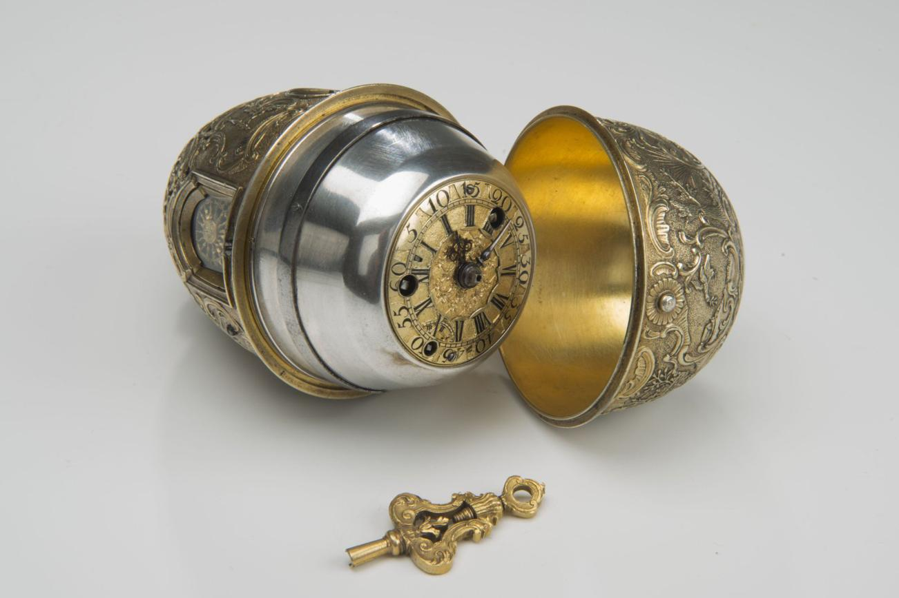
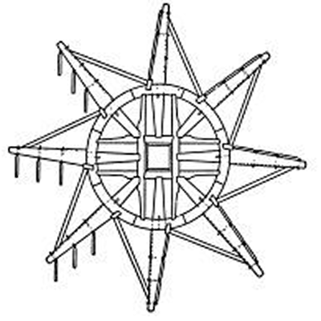
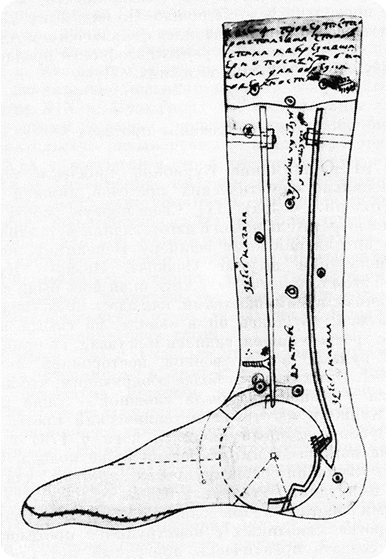

Иван Петрович Кулибин — легендарный русский механик-самоучка, изобретатель, которого нередко называют «нижегородским Архимедом». Его имя стало нарицательным: сегодня «кулибиным» зовут талантливого мастера, способного придумать и собрать что-то необычное своими руками.

Прорыв и признание при дворе.
Прорыв случился благодаря часам в форме гусиного яйца (1764–1767): в автомате из 427 деталей были мелодии и пасхальная сцена с движущимися фигурками. В 1769 году Кулибин подарил их Екатерине II — императрица пригласила его в Петербург и назначила руководителем механической мастерской Академии наук.
Ранние годы и становление мастера.
Кулибин родился в 1735 году в слободе Подновье близ Нижнего Новгорода в семье торговца, в старообрядческой среде — это сформировало его сдержанный характер. С детства увлекался механизмами и часами, освоил слесарное, токарное и часовое дело. В 1758 году открыл в Нижнем Новгороде часовую мастерскую и быстро завоевал репутацию надёжного мастера.


Последние годы и наследие.
В 1801 году Кулибин ушёл в отставку и вернулся в Нижний Новгород, где продолжал работать: предлагал проекты мостов, разрабатывал насосы, совершенствовал идею водохода, а в конце жизни пытался создать вечный двигатель, потратив на это почти все средства. Скончался Иван Петрович 30 июля (11 августа по новому стилю) 1818 года в Нижнем Новгороде, похоронен на Петропавловском кладбище (ныне — парк имени Кулибина).
Личная жизнь и особенности характера.
Кулибин был трижды женат, у него было 14 детей. Несмотря на покровительство двора, часто испытывал финансовые трудности: проекты не находили поддержки, а на идеи уходили личные средства. Оставался верен старообрядческим взглядам: носил кафтан и бороду, избегал излишеств и отказался от дворянского титула.

 Иван Кулибин
Иван Кулибин